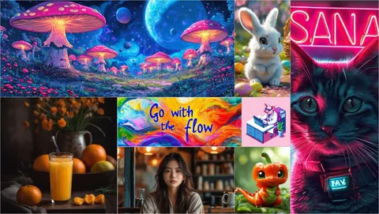

Вчера на Хабре вышла большая и захватывающая статья исследователя Yandex Research Сергея Кастрюлина об истории развития диффузионных моделей. Среди прочего в ней рассказано о борьбе каскадной и латентной парадигм, дилемме между свёрточными моделями и трансформерами, дистилляции как решении проблемы медленной генерации и многом другом. В этом посте мы уместили краткий обзор части работ, которые упоминаются в статье, — очень советуем прочитать полную версию.
Simple diffusion: End-to-end diffusion for high resolution images
Один из трендов начала 2023 года — противостояние каскадной и латентной диффузии. Обе парадигмы ставят задачей уменьшить размерность пространства, в котором происходит генерация объектов, поскольку считается, что генерация в высоком разрешении — слишком сложная задача. В своей работе авторы из Google Brain показывают, что диффузионную модель можно обучить сразу генерировать изображения в высоком разрешении без усложнений в виде каскадных схем и автокодировщиков. В статье на Хабре рассказано, с помощью каких приёмов это было достигнуто.
SDXL: Improving Latent Diffusion Models for High-Resolution Image Synthesis
Ещё одна громкая публикация, на этот раз от Stability.ai. Описанная в ней модель SDXL — первая по-настоящему большая опенсорс-модель с 2,8 миллиарда параметров (что немало и сегодня). Механизм, при котором конкатятся текстовые эмбеддинги из нескольких энкодеров, популярен до сих пор. Кроме этого, SDXL остаётся сильным бейзлайном по качеству генерации.
Emu: Enhancing Image Generation Models Using Photogenic Needles in a Haystack
EMU — первая text-to-image модель от Meta*. Авторы показывают, что для SFT важнее качество данных, а не их объём. В полной статье можно подробнее прочитать главное о разделении обучения на pretraining и SFT. А ещё именно в EMU впервые предложили использовать VAE, в которых было больше четырёх каналов — сейчас таким уже никого не удивишь.
Improving Image Captioning with Better Use of Captions
Релиз обновлённой DALL-E — событие, которое вышло далеко за рамки ML. Модель выгодно отличалась на фоне современников. Во многом OpenAI удалось достигнуть этого благодаря новому подходу к обучению: 95% пар «картинка — текст» заменили на правильную синтетику.
PixArt-α: Fast Training of Diffusion Transformer for Photorealistic Text-to-Image Synthesis
Трансформерную архитектуру DiT для диффузионных моделей предложили ещё в конце 2022 года. В PixArt-α её доработали, добавив возможность использовать тексты в качестве условия для генерации. Совместив это с изменениями в данных и обучении, авторы добились высоких результатов при минимальных вычислительных затратах.
Adversarial Diffusion Distillation
Статья, которую первоначально захейтили и отклонили рецензенты. Именно в ней Stability.ai предложила первый метод дистилляции для решения проблемы долгого инференса. Его использовали в модели SDXL‑Turbo и смогли генерировать изображения, сопоставимые по качеству с генерациями исходной модели, но на порядок быстрее. ADD до сих пор остаётся популярным методом дистилляции.
SANA, Kolors, FLUX и другие современные модели
Вторая часть статьи посвящена обзору более свежих разработок. Летом 2024-го вышел масштабный техрепорт Kolors — таким китайские исследователи балуют нечасто. В нём они, среди прочего, говорят об использовании GLM, мультиязычной генеративной модели, в качестве текстового энкодера. В ноябре того же года Nvidia представила модель SANA с возможностью без дополнительных Super‑Resolution‑моделей генерировать изображения в 4К. А в последнее время фокус сместился в сторону закрытых моделей, таких как Ideogram, Recraft, MidJourney и FLUX, о которых известно не так много.
Кроме более полного экскурса в эволюцию диффузионок за последние два года, в статье упоминают CV Week, бесплатный интенсив ШАДа о диффузионных моделях. О нём у нас был пост с комментариями спикеров — будет полезно, если захочется пробежаться по ключевым тезисам.
CV Time
___
Meta признана экстремистской организацией, а Facebook и Instagram запрещены на территории РФ
